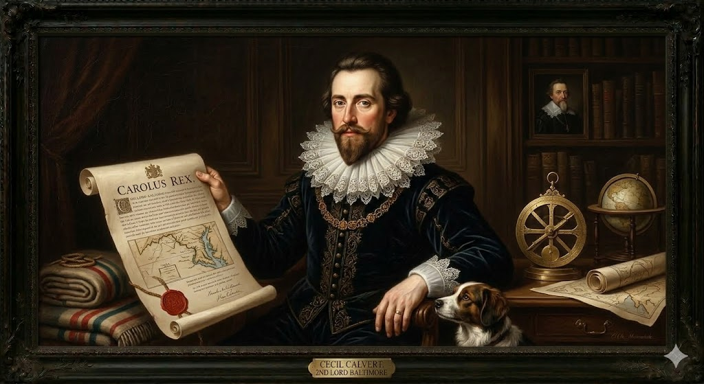
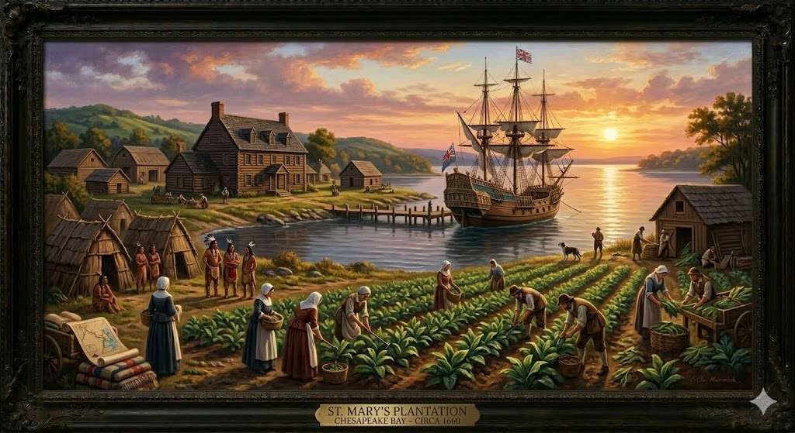

1. שנות פעילות, הקמה ויעדים
שנת הקמה: הזיכיון נחתם ב-20 ביוני 1632. המתיישבים הראשונים הגיעו במרץ 1634 על גבי שתי ספינות: "התיבה" (The Ark) ו"היונה" (The Dove).
ישות מקימה: בניגוד לוירג'יניה ומסצ'וסטס שהוקמו על ידי חברות מניות, מרילנד הייתה המושבה הקניינית (Proprietary colony) הראשונה. המלך העניק את האדמה כולה, יחד עם סמכויות שלטון כמעט מלכותיות, לאדם יחיד - לורד בולטימור, כנחלה פיאודלית פרטית.
היעדים המקוריים: היעד המרכזי היה להקים מקלט בטוח לקתולים אנגלים שסבלו מקנסות, אפליה ורדיפות במולדתם הפרוטסטנטית. עם זאת, היעד הכלכלי היה קריטי לא פחות: לורד בולטימור השקיע את רוב הונו בפרויקט ושאף להקים אחוזות ענק שיוחכרו למתיישבים כדי להפיק רווחים אדירים, בעיקר מגידול טבק.
2. מייסדי המושבה: שושלת לורד בולטימור

ג'ורג' קלברט, לורד בולטימור ה-1 (1579–1632)
רקע והחזון: ג'ורג' נולד ביורקשייר. בשיא הקריירה הפוליטית שלו כמזכיר המדינה ב-1625, הוא הכריז על חזרתו לדת הקתולית והתפטר. המלך העניק לו את התואר "הברון הראשון של בולטימור". ג'ורג' ניסה להקים מושבה קתולית בניופאונדלנד, אך החורף הקטלני שם הבריח אותו דרומה. הוא מת שבועות ספורים לפני אישור הזיכיון למרילנד.
ססיל קלברט, לורד בולטימור ה-2 (1605–1675)
ססיל ירש את הזיכיון. הוא מימן את משלחת ההתיישבות הראשונה ב-1634, ומינה את אחיו לאונרד למושל. ססיל מעולם לא דרך באמריקה, אך ניהל מלונדון את המושבה בחוכמה, חוקק את חוקי הסובלנות הדתית, והגן עליה מפני השתלטות הפרוטסטנטים מווירג'יניה. העיר בולטימור קרויה על שם התואר שלו.
3. אידאולוגיה: חלוצת הסובלנות הדתית
האידאולוגיה של מרילנד הייתה מהפכנית. משפחת קלברט הבינה שכדי שהמושבה תשרוד כלכלית, הם חייבים לפתוח אותה להגירה המונית של פרוטסטנטים.
- דו-קיום הלכה למעשה: הספינות הראשונות נשאו רוב של משרתים פרוטסטנטים, יחד עם מיעוט אצילים קתולים. לורד בולטימור הנחה אותם לנהל טקסים בצנעה ולשמור על כבוד הדדי כדי לא לעורר אלימות אנגליקנית.
- חוק הסובלנות של מרילנד (1649): כאשר מספר הפרוטסטנטים גבר והחל לאיים על השלטון, האסיפה העבירה את "חוק הסובלנות" (Maryland Toleration Act). החוק קבע חופש דת מוחלט ועונשים למי שיטריד אדם אחר בשל אמונתו (כל עוד הוא מאמין בשילוש הקדוש). זהו אחד הבסיסים החוקתיים המוקדמים לחופש הדת בארה"ב.
4. גיאוגרפיה ובחירת המיקום: הפקת לקחי העבר
א. מפרץ צ'ספיק (Chesapeake Bay)
הידרולוגיה ואקולוגיה: מרילנד יושבת בחציו הצפוני של מפרץ צ'ספיק (המפרץ הנהרי הגדול בארה"ב). המפרץ מאופיין ברשת עצומה של נהרות עמוקים וניתנים לניווט החודרים פנימה ליבשה. האזור היה עשיר באופן קיצוני בסרטנים, צדפות ודגים, שסיפקו מזון בשפע.
ב. ייסוד העיר סנט מרי (St. Mary's City)
משלחת קלברט תכננה את המיקום בקפידה כדי להימנע מאסון הרעב והמחלות של ג'יימסטאון השכנה:
- מיקום גבוה ויבש: נבחרה רצועת חוף גבוהה לאורך נהר סנט מרי למניעת ביצות קטלניות.
- רכישת אדמות (ולא כיבוש): האנגלים שילמו בגרזנים ובדים לשבט מקומי, וקנו את הכפר קומפלט כולל שדות תירס מעובדים, מה שהבטיח להם חורף ראשון שבע ושליו.
- עורק תחבורה: המים העמוקים אפשרו פריקה וטעינה ישירה מאחוזות הטבק אל ספינות סוחר אנגליות.
5. כלכלה: בין פיאודליזם לטבק

התוכנית הכלכלית המקורית של מרילנד השתבשה לחלוטין מול המציאות האמריקאית:
- כישלון ה"שיטה המנוריאלית": בולטימור ניסה להקים אחוזות פיאודליות ענקיות שינוהלו על ידי אצילים קתולים ויושכרו לצמיתים פרוטסטנטים. אך הקרקע באמריקה הייתה זולה וזמינה. האיכרים סירבו להיות צמיתים וקנו לעצמם חלקות עצמאיות לאורך הנהרות.
- כלכלת מטע הטבק: מרילנד גילתה שהכסף הגדול נמצא בייצוא טבק (Tobacco Economy). האדמה סביב מפרץ צ'ספיק הפכה כל חווה למטע. עלי הטבק שימשו כמטבע רשמי של המושבה, ואיתם שילמו מיסים ומשכורות.
- היעדר ערים: מכיוון שמפרץ צ'ספיק איפשר לספינות אוקייניות לעגון ולפרוק סחורה ישירות במזחים הפרטיים של האחוזות, לא נוצר צורך אמיתי להקים ערי נמל צפופות בעשורים הראשונים.
6. דמוגרפיה ומבנה חברתי: הרוב המתוסכל
הדמוגרפיה של מרילנד הייתה מלאת סתירות ויצרה פצצת זמן חברתית-פוליטית:
- הפרדוקס הדמוגרפי: מרילנד נועדה להיות מקלט קתולי, אך בפועל לא היו מספיק קתולים עשירים באנגליה שרצו להגר. הפרוטסטנטים הפכו מיד לרוב המוחלט של האוכלוסייה, בעוד שהמיעוט הקתולי שלט בקרקעות ובממשל. הפער יצר תסכול עצום.
- משרתים חוזיים ותמותה: רוב ההגירה התבססה על צעירים עניים שהגיעו כ"משרתים חוזיים" לעבוד במטעי הטבק. אקלים הצ'ספיק היה קטלני, מלא במלריה, ותוחלת החיים נותרה נמוכה.
- "משפחות מורכבות": שיעורי התמותה הגבוהים של הורים צעירים הותירו יתומים רבים. אלמנים ואלמנות מיהרו להינשא מחדש, מה שיצר חברה ייחודית של "משפחות מורכבות" (Blended families) שבהן גדלו יחד אחים למחצה בחוות הטבק.
7. מאבקי השליטה: מרידות ואובדן הזיכיון
חוסר האיזון שבו מיעוט קתולי שלט על רוב פרוטסטנטי, התפוצץ לבסוף והוביל לאובדן השליטה של משפחת קלברט:
המהפכה הפרוטסטנטית (1689)
- מועדי המאבק: תקופת "זמן השוד" (1644-1646) והמהפכה של 1689.
- אישים בולטים: קפטן ריצ'רד אינגל (פיראט פרוטסטנטי), ג'ון קוד (מנהיג המרד), והמושל ליאונרד קלברט.
- מהלך המאבקים: הרמז הראשון לבאות היה ב"זמן השוד" (The Plundering Time) בשנות ה-40 של המאה ה-17, כאשר פיראטים פרוטסטנטים בפיקודו של ריצ'רד אינגל פלשו למרילנד, בזזו אחוזות קתוליות ואילצו את המושל קלברט לברוח לוירג'יניה לזמן קצר. הקריסה הסופית של האוטופיה הקתולית התרחשה במקביל ל"מהפכה המהוללת" באנגליה (1689) בה הודח המלך הקתולי. בהשראת האירועים בלונדון, קם מתיישב פרוטסטנטי בשם ג'ון קוד (John Coode) והוביל מרד מזוין נגד השלטון של לורד בולטימור. קוד וצבאו הדיחו את ההנהגה הקתולית, אסרו על קתולים להצביע או לכהן במשרות ציבוריות, והעבירו את השליטה במרילנד בחזרה לידי הכתר הבריטי כמושבת כתר (Royal Colony). משפחת קלברט איבדה את הזיכיון הפוליטי שלה למשך 25 שנים, עד שאחד מיורשיהם המיר את דתו לפרוטסטנטיות וקיבל את המושבה בחזרה.
8. מחקר אטימולוגי: המושבה Maryland
Mary (מארי / מרי)
מקור: עברית דרך לטיניתהשם מקורו בשם העברי/ארמי ההיסטורי מִרְיָם (Miryam), שעבר תרגום ללטינית כ-Maria. בהקשר ההיסטורי-פוליטי של המושבה, השם מתייחס ישירות להנרייט מארי (Henrietta Maria), הנסיכה הצרפתית ואשתו של מלך אנגליה צ'ארלס הראשון.
land (לנד)
מקור: גרמאנית עתיקהנגזר מהמילה העתיקה landam. משמעותו הפשוטה היא "ארץ", "אדמה" או "שטח טריטוריאלי מוגדר".
Terra Mariae / Maryland (מרילנד)
במסמך הזיכיון הלטיני המקורי, השם נכתב כ-Terra Mariae. ההלחם לאנגלית יצר את "מרילנד" (הארץ של מארי).
לורד בולטימור העניק למושבה שם זה כמחווה פוליטית מבריקה למלכה הקתולית (אשתו של המלך). חנופה זו הבטיחה את תמיכתו של המלך במיזם למרות חוסר הפופולריות של הקתולים בפרלמנט. עם זאת, עבור המתיישבים הקתולים, השם הדהד באופן סמוי כהקדשה רוחנית טהורה לבתולה מרים (Virgin Mary), אמו של ישו.